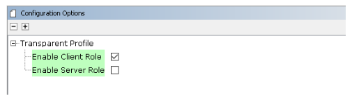
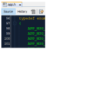

3.1.1.5 BLE Transparent UART
Getting Started with Central Building Blocks
Introduction
This section enables users create a central device and send/receive characters between two connected BLE devices over Microchip proprietary Transparent UART Profile. The central and peripheral devices in this tutorial are two WBZ451 devices. The following instructions are applicable for a BLE Central device.
Users can choose to run the precompiled application example .hex file on
the WBZ451 Curiosity Board and experience the demo or go through
the steps involved in developing this application from scratch.
Recommendation is to follow the examples in order, by learning the basic concepts first and then progressing to the more advanced topics.
Recommended Reading
Hardware Requirement
| Tool | Qty |
|---|---|
| WBZ451 Curiosity Board | 2 |
| Micro USB cable | 2 |
SDK Setup
Software Requirement
Smart phone App
None
Programming the Precompiled Hex File or Application Example
Programming the .hex File using MPLAB X IPE
- Central Device – Precompiled
.hexfile is located in"<Harmony Content Path>\wireless_apps_pic32cxbz2_wbz45\apps\ble\building_blocks\central\profiles_services\central_trp_uart\hex"folder - Peripheral Device – Precompiled
.hexfile is located in"<Harmony Content Path>\wireless_apps_pic32cxbz2_wbz45\apps\ble\building_blocks\Peripheral\profiles_services\peripheral_trp_uart\hex"folder - For more details on the steps, go to Programming A Device
Programming the Application using MPLAB X IDE
- Follow steps mentioned in the Running a Precompiled Example section.
- Central Device – Open and program the
application example "
central_trp_uart.X" located in "<Harmony Content Path>\wireless_apps_pic32cxbz2_wbz45\apps\ble\building_blocks\central\profiles_services\central_trp_uart\firmware"using MPLAB X IDE - Peripheral Device – Open and program the application example
"
peripheral_trp_uart.X" located in "<Harmony Content Path>\wireless_apps_pic32cxbz2_wbz45\apps\ble\building_blocks\peripheral\profiles_services\peripheral_trp_uart\firmware"using MPLAB X IDE
For more details on finding the Harmony content path, refer to Installing the MCC Plugin
Demo Description
Upon programming the demo application, central device (WBZ451) will start scanning for near by peripheral devices to connect. After a connection has been made data can be sent back and forth over UART between the two devices that are connected.
Demo application prints the status messages "Scanning" at the initiation of the scan process, "Connected!" upon successful connection, and "Disconnected" when the connection is lost, within a terminal emulator interface.
- Baud Rate/Speed – 115200 (as configured in SERCOM configuration)
- Parity – None
- Data Bits – 8
- Stop Bits – 1
- Flow Control – None
Application data to be sent to the connected peripheral device must be entered in the terminal emulator.
Testing
Users must use another WBZ451 Curiosity Board configured as 3.1.2.6 BLE Transparent UART (Peripheral).
Experience the Demo using two WBZ451 Curiosity boards configured as Peripheral and Central device
This section assumes that a user has already programmed the “peripheral_trp_uart” and “central_trp_uart” application on two WBZ451 Curiosity Boards.
- Board 1 – WBZ451 Curiosity Board Programmed with “peripheral_trp_uart”
- Open TeraTerm and configure as
mentioned below:Terminal Settings
- Baud Rate/Speed – 921600 (as configured in SERCOM configuration)
- Parity – None
- Data Bits – 8
- Stop Bits – 1
- Flow Control – None
For terminal setup configuration, go to Setup>Terminal
For Serial port setup and connection, go to Setup>Serial Port
Figure 3-39. Tera Term Settings 
- Reset the board, Upon reset, "Advertising" message is displayed on the Tera Term.
- Open TeraTerm and configure as
mentioned below:
- Board 2 – WBZ451 Curiosity Board Programmed with “central_trp_uart”
- Open TeraTerm and configure as
mentioned below:Terminal Settings
- Baud Rate/Speed – 115200 (as configured in SERCOM configuration)
- Parity – None
- Data Bits – 8
- Stop Bits – 1
- Flow Control – None
For terminal setup configuration, go to Setup>Terminal
For Serial port setup and connection, go to Setup>Serial Port
- Reset the board. Upon reset, "Scanning" message is displayed on the TeraTerm.
- Upon finding peripheral device with public address {0xA1, 0xA2, 0xA3, 0xA4, 0xA5, 0xA6} message "Found Peer Node" will be displayed and a connection request will be initiated "Initiating connection".
- Open TeraTerm and configure as
mentioned below:


Developing this Application from Scratch using MCC
This section explains the steps required by a user to develop this application example from scratch using MCC
-
Create a new MPLAB MCC Harmony Project. For more details, refer to 2.5 Creating a New MCC Harmony Project
- Import component configuration -- This
step helps users setup the basic components and configuration required to develop this
application. The imported file is of format
.mc3and is located in the path"<Harmony Content Path>\wireless_apps_pic32cxbz2_wbz45\apps\ble\building_blocks\central\profiles_services\central_trp_uart\firmware\central_trp_uart.X".For more details on importing the component configuration , refer to 15.3 Importing Existing App Example ConfigurationNote: Import and export functionality of Harmony component configuration will help users to start from a known working setup of MCC configuration - Accept Dependencies or Satisfiers, select Yes
- Verify if the project graph window has
all the expected configuration. as illustrated in the following figure:
Figure 3-41. Project Graph
Verifying Scan,Connection and Transparent Profile Configuration
-
Select BLE Stack component in project graph, to open component configuration and configure as illustrated in the following figure.
Figure 3-42. BLE Stack Configuration 
-
Select Transparent Profile component in project graph, to open component configuration and configure as illustrated in the following figure.
Figure 3-43. Transparent Profile Configuration 
Generating Code
For more details on code generation, refer to, 15.2 MPLAB Code Configurator(MCC) Code Generation.
Files and Routines Automatically generated by the MCC

initialization.c
app_ble.c| Source Files | Usage |
|---|---|
app.c |
Application State machine, includes calls for Initialization of all BLE stack (GAP,GATT, SMP, L2CAP) related component configurations |
|
|
Source Code for the BLE stack related component configurations, code related to
function calls from app.c |
app_ble\app_ble_handler.c |
All GAP, GATT, SMP and L2CAP Event handlers |
app_ble\app_trspc_handler.c |
All Transparent UART Client related Event handlers |
ble_trspc.c |
All Transparent Client Functions for user application |
app.c is autogenerated and has a state machine based Application code
sample. Users can use this template to develop their application.Header Files
-
ble_gap.h: This header file contains BLE GAP functions and is automatically included in theapp.cfile -
ble_trspc.h: This header file associated with API’s and structures related to BLE Transparent Client functions for application user.
Function Calls
MCC generates and adds the code to initialize the BLE Stack GAP, GATT, L2CAP and SMP in
APP_BleStackInit() function.
-
APP_BleStackInit()is the API that will be called inside the Applications Initial State --APP_STATE_INITinapp.c
User Application Development
Include
-
ble_trspc.hin app.c, BLE Transparent UART Server related API's are available here -
osal/osal_freertos_extend.hinapp_trsps_handler.c, OSAL related API's are available here -
definitions.hin all the files where UART will be used to print debug informationNote:definitions.his not specific to just UART peripheral, instead it must be included in all application source files where peripheral functionality will be exercised.

// Scanning Enabled
BLE_GAP_SetScanningEnable(true, BLE_GAP_SCAN_FD_ENABLE, BLE_GAP_SCAN_MODE_OBSERVER, 1000); // Output the state string to UART
SERCOM0_USART_Write((uint8_t *)"Scanning \r\n", 11);This API is called in the Applications initialstate - APP_STATE_INIT in
app.c. Scan duration is 100 seconds
Scan Results and initiating a BLE Connection
BLE_GAP_EVT_ADV_REPORTevent is generated upon finding Advertisements on legacy channels-
BLE connection can be initiated by using the API
BLE_GAP_CreateConnection(&createConnParam_t;
// code snippet to filter scan results and initiate connection
if (p_event->eventField.evtAdvReport.addr.addr[0] == 0xA1 && p_event->eventField.evtAdvReport.addr.addr[1] == 0xA2)
{
SERCOM0_USART_Write((uint8_t *)"Found Peer Node\r\n", 17);
BLE_GAP_CreateConnParams_T createConnParam_t;
createConnParam_t.scanInterval = 0x3C; // 37.5 ms
createConnParam_t.scanWindow = 0x1E; // 18.75 ms
createConnParam_t.filterPolicy = BLE_GAP_SCAN_FP_ACCEPT_ALL;
createConnParam_t.peerAddr.addrType = p_event->eventField.evtAdvReport.addr.addrType;
memcpy(createConnParam_t.peerAddr.addr, p_event->eventField.evtAdvReport.addr.addr, GAP_MAX_BD_ADDRESS_LEN);
createConnParam_t.connParams.intervalMin = 0x10; // 20ms
createConnParam_t.connParams.intervalMax = 0x10; // 20ms
createConnParam_t.connParams.latency = 0;
createConnParam_t.connParams.supervisionTimeout = 0x48; // 720ms
SERCOM0_USART_Write((uint8_t *)"Initiating Connection\r\n", 23);
BLE_GAP_CreateConnection(&createConnParam_t);
}
app_ble_handler.cConnected and Disconnected Events
-
In
app_ble_handler.c "BLE_GAP_EVT_CONNECTED"event will be generated when a BLE connection is completed
Connection Handler
-
Connection handle associated with the peer peripheral device needs to be saved for data exchange after a BLE connection
-
p_event->eventField.evtConnect.connHandlehas this information// Global variable extern uint16_t conn_hdl; // Connected event SERCOM0_USART_Write((uint8_t *)"Connected\r\n", 11); conn_hdl = p_event->eventField.evtConnect.connHandle; // Disconnected event SERCOM0_USART_Write((uint8_t *)"Disconnected\r\n", 14);Figure 3-49. app_ble_handler.c
- In
app_ble_handler.cBLE_GAP_EVT_SCAN_TIMEOUTevent is generated when BLE Scan duration expires.
SERCOM0_USART_Write((uint8_t *)"Scan Completed! \r\n", 18);Transmit Data
-
Add
APP_MSG_UART_CBto the generatedAPP_MsgId_Tinapp.hFigure 3-51. Transmit Data  BLE_TRSPC_SendData(conn_hdl , 1, &data);is the API to be used for sending data towards the central deviceNote: The precompiled application example uses a UART callback to initiate the data transmission upon receiving a character on UART
Example Implementation for Transmitting the received data over UART using the
BLE_TRSPC_SendData API
uint16_t conn_hdl;// connection handle info captured @BLE_GAP_EVT_CONNECTED event
uint8_t uart_data;
void uart_cb(SERCOM_USART_EVENT event, uintptr_t context)
{
APP_Msg_T appMsg;
// If RX data from UART reached threshold (previously set to 1)
if( event == SERCOM_USART_EVENT_READ_THRESHOLD_REACHED )
{
// Read 1 byte data from UART
SERCOM0_USART_Read(&uart_data, 1);
appMsg.msgId = APP_MSG_UART_CB;
OSAL_QUEUE_Send(&appData.appQueue, &appMsg, 0);
}
}
void APP_UartCBHandler()
{
// Send the data from UART to connected device through Transparent service
BLE_TRSPC_SendData(conn_hdl, 1, &uart_data);
}
////////////////////////////////////////////////////////////////////////////////////
// Register call back when data is available on UART for Peripheral Device to send
// Enable UART Read
SERCOM0_USART_ReadNotificationEnable(true, true);
// Set UART RX notification threshold to be 1
SERCOM0_USART_ReadThresholdSet(1);
// Register the UART RX callback function
SERCOM0_USART_ReadCallbackRegister(uart_cb, (uintptr_t)NULL);
////////////////////////////////////////////////////////////////////////////////////
//If msg received in Queue, handle the Queue message based on msgID
if (OSAL_QUEUE_Receive(&appData.appQueue, &appMsg, OSAL_WAIT_FOREVER))
{
if(p_appMsg->msgId==APP_MSG_BLE_STACK_EVT)
{
// Pass BLE Stack Event Message to User Application for handling
APP_BleStackEvtHandler((STACK_Event_T *)p_appMsg->msgData);
}
else if(p_appMsg->msgId==APP_MSG_BLE_STACK_LOG)
{
// Pass BLE LOG Event Message to User Application for handling
APP_BleStackLogHandler((BT_SYS_LogEvent_T *)p_appMsg->msgData);
}
else if(p_appMsg->msgId==APP_MSG_UART_CB)
{
// Transparent UART Client Data transfer Event
APP_UartCBHandler();
}
}
app.capp.capp.c
Receive Data
-
BLE_TRSPC_EVT_RECEIVE_DATAis the event generated when data is sent from central device -
Users need to use the
BLE_TRSPC_GetDataLength(&data_len)API to extract the length of application data received -
BLE_TRSPC_GetData(&conn_hdl, data);API is used to retrieve the data,conn_hdlis the value obtained from Connection Handler section
BLE_TRSPC_Event_T p_event structure stores the information about BLE
transparent UART callback functionsExample Implementation for printing the received data from peripheral device over UART
/* TODO: implement your application code.*/
uint16_t data_len;
uint8_t *data;
// Retrieve received data length
BLE_TRSPC_GetDataLength(p_event->eventField.onReceiveData.connHandle, &data_len);
// Allocate memory according to data length
data = OSAL_Malloc(data_len);
if(data == NULL)
break;
// Retrieve received data
BLE_TRSPC_GetData(p_event->eventField.onReceiveData.connHandle, data);
// Output received data to UART
SERCOM0_USART_Write(data, data_len);
// Free memory
OSAL_Free(data);app_trspc_handler.cFor more details on exercising various other BLE functionalities refer to, BLE Stack API section.
For more details, refer to BLE Multilink Transparent UART section.